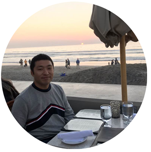

I am a PhD student at UC San Diego, looking for an internship position in digital VLSI design
and electronic design automation (EDA) area. My research interests are in manufacturing-aware physical design methodologies, design-technology co-
optimization (DTCO) and machine learning-based prediction and optimization for physical design.
- Education
-
University of California, San Diego (UCSD) Sep. 2017 - Present
Ph.D. Student, Electrical and Computer Engineering
Advisor: Prof. Andrew B. Kahng
Korea Advanced Institute of Science
and Technology (KAIST) Feb. 2011 - Feb. 2013
M.S., Electrical Engineering
Advisor: Prof. Chong-Min Kyung
Yonsei University Mar. 2004 - Feb. 2011
B.S., Electrical and Electronic Engineering
- Technical Experiences
-
Graduate Student Researcher Sep. 2017 - Present
VLSI CAD Laboratory, University of California, San Diego (UCSD)
- Research for a manufacturing-aware leakage optimization and placement methodology for advanced
technologies
- Research for power delivery networks (power stapling) to mitigate IR-drop for advanced technologies
- Research for a use of multi-bit combinational cells in design
- Currently working on an open-sourcing research project (OpenROAD) supported by DARPA (URL: https://theopenroadproject.org/)
Physical Design Engineer Feb. 2013 - Jul. 2017
Design Technology Team, System LSI, Samsung
- Developed physical design methodology for Samsung’s 10/14nm FinFET technology
- Set up overall physical design flow from netlist to GDS
- Developed and maintained reference scripts and technology files for automatic place-and-route
- Understand complex design rules for 10/14nm process nodes
- Provided technical support and technology files for Samsung’s foundry customers
- Supported Qualcomm, Nvidia, AMD, and ST Microelectronics
- Collaborated with Synopsys, Cadence, and Mentor
- Experienced SoC projects for silicon verification
- Participated in physical design of a 3M+ instance design for the world’s 1st 10nm SoC project
- Performed technical support for Samsung 10/14nm projects
Graduate Student Researcher Feb. 2011 - Feb. 2013
Smart Sensor Architecture Laboratory, Korea Advanced Institute of Science and Technology (KAIST)
- Developed an energy management scheme for camera systems with solar-powered batteries and wireless visual sensor networks
- Participated in a research project supported by Global Frontier Program in Korea
- Technical Skills
-
Research Skills
- Understand overall SoC design flows from RTL to GDS
- Developed novel SoC design methodologies to achieve best PPA
Design Tools
- Place and Route: IC complier, IC compiler II, Innovus, and Olympus-SoC
- Static Timing Analysis and RC extraction: Primetime and STAR-RC
- Signoff DRC: CalibreDRC and IC Validator
Language Skills
- Verilog HDL, Tcl/Tk, C/C++, Python, Perl, Matlab
- Publications
-
Conference
(All papers with Prof. Andrew B. Kahng, have authors listed in alphabetical order)
- C.-T Ho, A. B. Kahng, C. Kim, M. Kim and L. Wang, "Sensitivity-based Multi-Bit Combination Cell Merge for
Dynamic Power Reduction", Proc. ACM/IEEE Design Automation Conference, 2020, submitted.
- V. A. Chhabria, A. B. Kahng, M. Kim, U. Mallappa, S. S. Sapatnekar, B. Xu, "Template-based PDN Synthesis
in Floorplan and Placement Using Classifier and CNN Techniques", Proc. ACM/IEEE Asia and South Pacific
Design Automation Conference, 2020, pp. 44-49.
- T. Ajayi, V. A. Chhabria, M. Fogaça, S. Hashemi, A. Hosny, A. B. Kahng, M. Kim, J. Lee, U. Mallappa, M.
Neseem, G. Pradipta, S. Reda, M. Saligane, S. S. Sapatnekar, C. Sechen, M. Shalan, W. Swartz, L. Wang, Z.
Wang, M. Woo and B. Xu, "Toward an Open-Source Digital Flow: First Learnings from the OpenROAD
Project", Proc. ACM/IEEE Design Automation Conference, 2019, pp. 76:1-76:4.
- T. Ajayi, D. Blaauw, T.-B. Chan, C.-K. Cheng, V. A. Chhabria, D. K. Choo, M. Coltella, S. Dobre, R. Dreslinski,
M. Fogaça, S. Hashemi, A. Hosny, A. B. Kahng, M. Kim, J. Li, Z. Liang, U. Mallappa, P. Penzes, G. Pradipta, S.
Reda, A. Rovinski, K. Samadi, S. S. Sapatnekar, L. Saul, C. Sechen, V. Srinivas, W. Swartz, D. Sylvester, D.
Urquhart, L. Wang, M. Woo and B. Xu, "OpenROAD: Toward a Self- Driving, Open-Source Digital Layout
Implementation Tool Chain", Proc. Government Microcircuit Applications and Critical Technology Conference,
2019, pp. 1105-1110.
- Sun ik Heo, Andrew B. Kahng, Minsoo Kim, Lutong Wang and Chutong Yang "Detailed Placement for IR Drop Mitigation by Power Staple Insertion in Sub-10nm VLSI", Proc. Design, Automation and Test in Europe, 2019, to appear.
- Sun ik Heo, Andrew B. Kahng, Minsoo Kim and Lutong Wang, "Diffusion Break-Aware Leakage Power Optimization and Detailed Placement in Sub-10nm VLSI", Proc. Asia and South Pacific Design Automation Conference, 2019, to appear.
- Minsoo Kim, Chong-Min Kyung, Kang Yi, “An Energy Management Scheme for Solar-Powered Wireless Visual Sensor Networks Toward Uninterrupted Operations”, Proc. International SoC Design Conference, 2013, pp. 23-26.